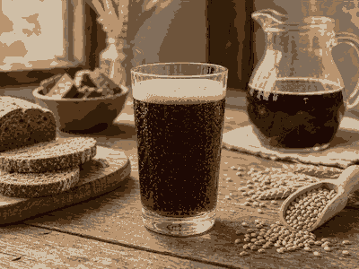

Recipe
Draniki
Crisp potato pancakes with sour cream.
Ingredients
- 700 g potatoes
- 1 onion
- 1 egg
- 2 tbsp flour
- Sour cream
- Dill
How to make it
- Grate potatoes and onion, then squeeze lightly. Prepare this first and keep the heat moderate; rushing the first stage usually gives uneven texture later.
- Mix with egg, flour, salt and pepper. Work in a bowl for 2-3 minutes until the mixture looks even, then let it rest for 10-20 minutes so the flour, meat or spices hydrate properly.
- Fry spoonfuls until crisp on both sides. Use medium-high heat to get color, then lower to medium so the inside cooks through without burning. Turn only when the first side has a firm golden crust.
- Serve hot with sour cream and dill. Taste once more before serving. Add salt, acid, herbs or a spoon of sauce at the end while the dish is still hot.
More info

KvassTangy malt beside earthy soup Eastern European folkWarm folk tone for soups and dumplings
Eastern European folkWarm folk tone for soups and dumplingsServing note
Keep the plate simple and let the main texture lead: crisp pastry, tender stew, glossy sauce or fresh garnish. This page is a compact cooking guide, not a long article.